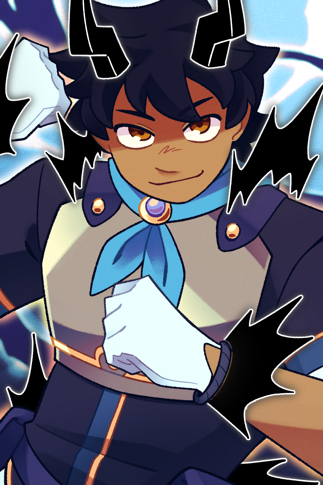
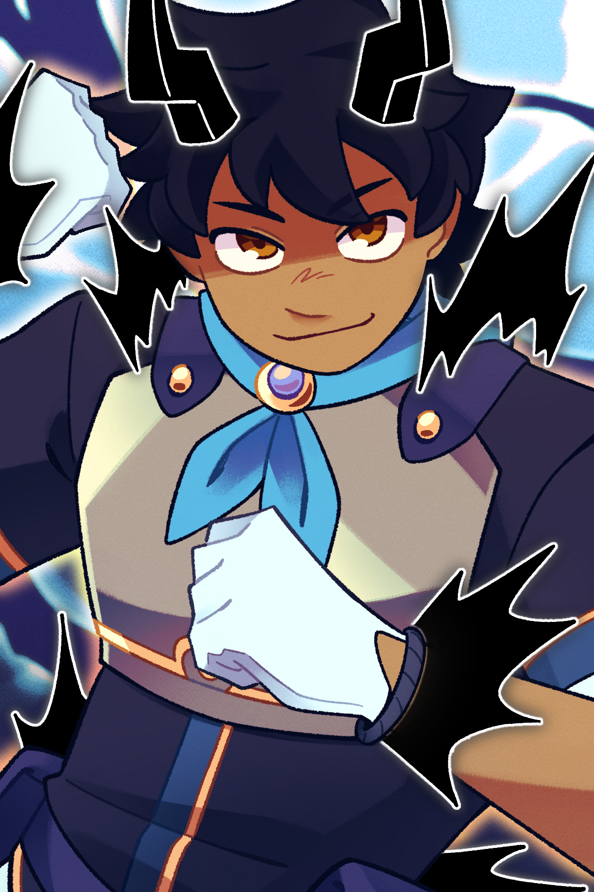
 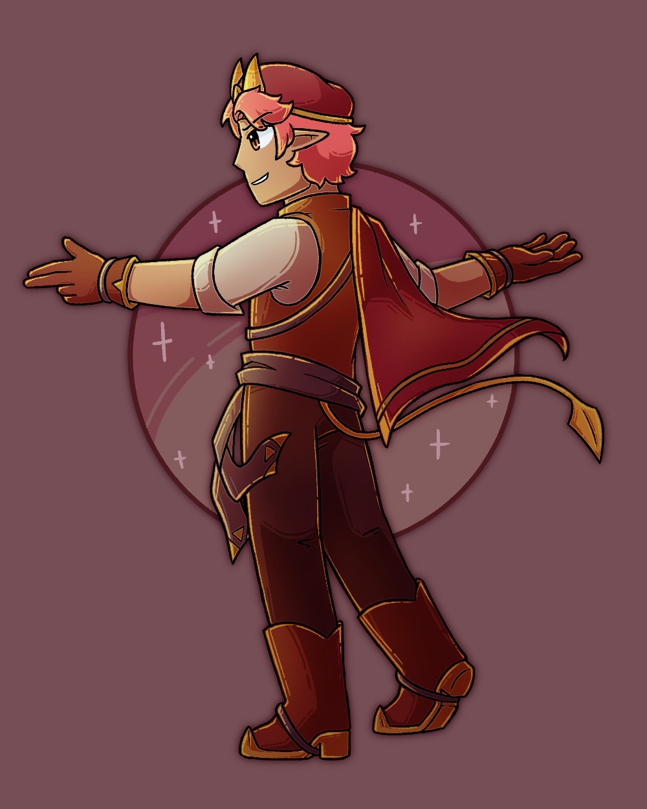
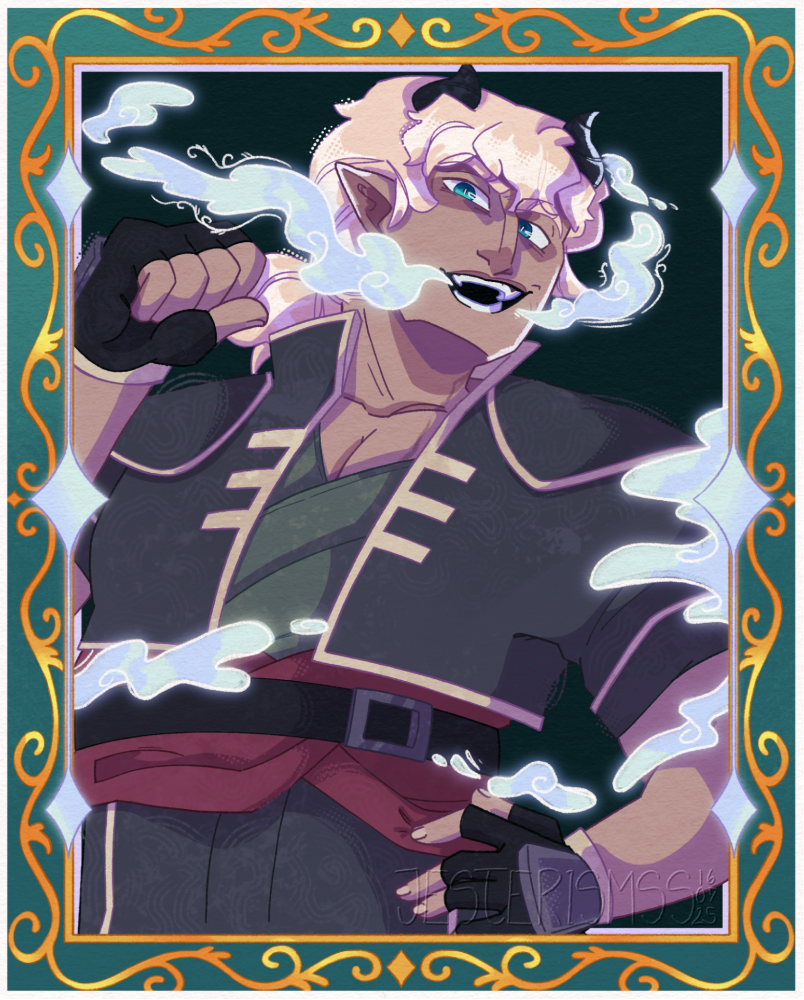
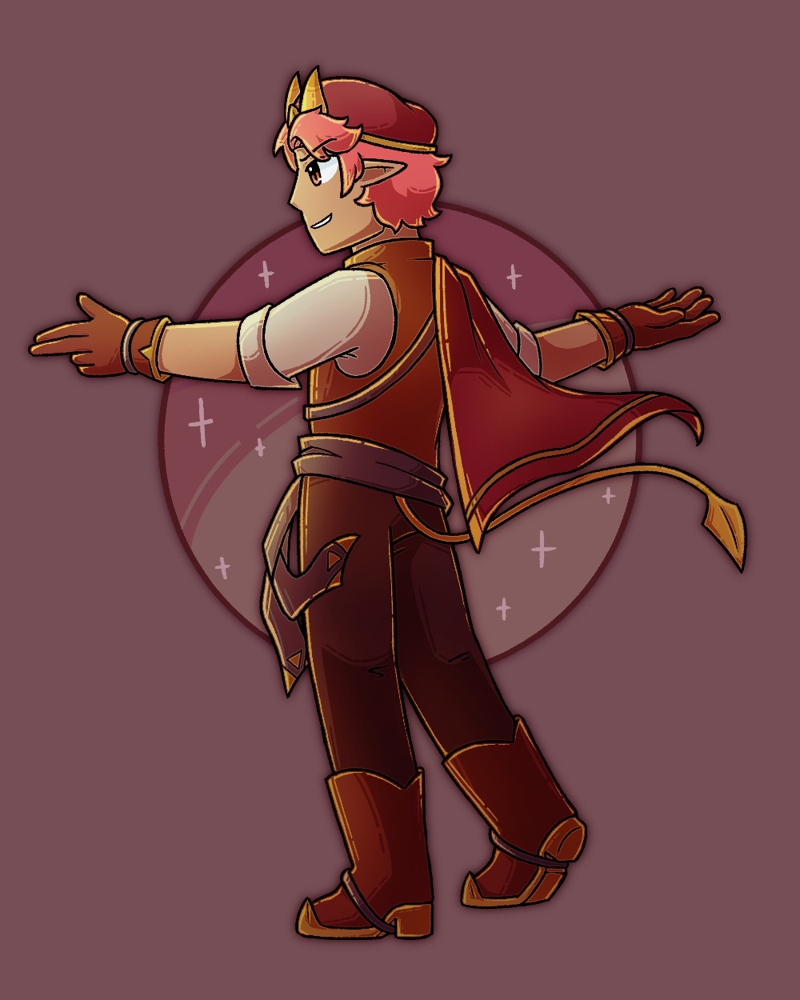
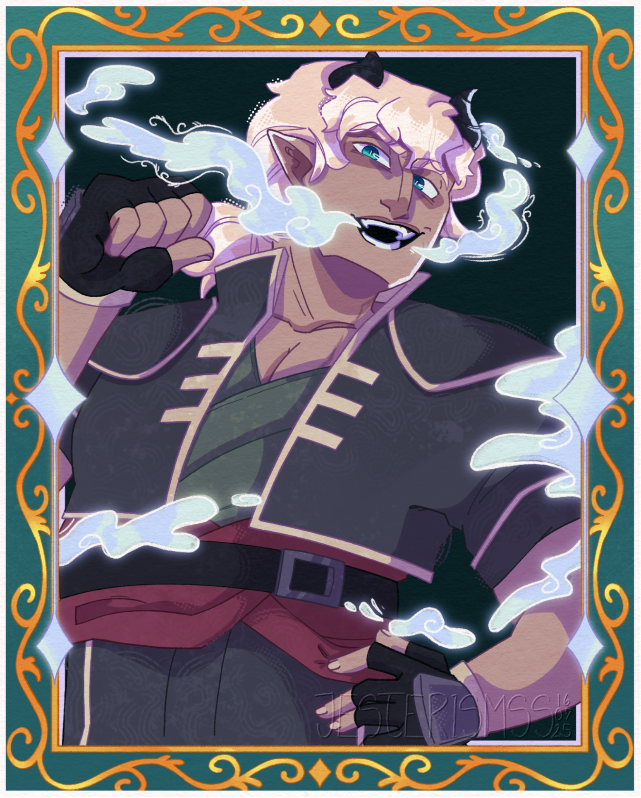
LIGHT FOLLOWS.
Embark on a magical journey where the strength of one's bonds has the power to overcome even prophecy. Bolt from the Blue follows the story of Araceli Almador de Luna, princess of a kingdom that's just been brought to ruin by a powerful, dark entity—one that she was destined to stop, but couldn't due to a curse that's plagued her for her entire life. Araceli's story is shown through the perspective of Raiden, her kind attendant ("shadow") with no recollection of her own past, who devotes herself entirely to Araceli's safety and well-being. Little do they know, the destruction has spread far beyond their home.
Accompanied by the ever-ambitious scion Saffron and the boisterous pirate Cole, the duo set out on a quest to lift Araceli's curse and return home—hopefully not too late for Araceli to fulfill her destiny as her kingdom's hero. At every turn, the party is threatened Nox Noctis, a mysterious organization seeking to seize control of mythical powers from Luxos' ancient past. Together, these four will put a stop to Nox Noctis' plans and bring light to a world succumbed to darkness.
(img by greypij.bsky.social)
It's been six whole years since Raiden washed up in Bura Bay with nothing to her name, aside from her name itself. By some divine stroke of fate, she was taken in by the Cielisono Royal Family and has been serving as the princess' shadow, a role which entails more than enough knight-attendant duties to keep her busy. Though quiet, Raiden is extremely gentle and kind, inadvertently drawing people towards herself.
(img by alphajn.bsky.social)
- Most of her interests seem to line up with Araceli's
- Can't remove the bands around her wrists
- Suprisingly athletic and picks up most games/sports fairly easily
"It's a good thing that you're alive. The princess can use your support!"
Princess of the Cielisono Royal Family and future ruler of its kingdom, Araceli spent most of her time studying under an Arcanican tutor, training with the Windknights in magic and swordplay, and trying to hone her pact with the Champion Loniles. To the rest of the world, Araceli was the picture-perfect heiress for the kingdom. Behind all of that façade, however, was a young girl cursed to fail everyone.
(img by cyberart@AF)
- Enjoys reading young adult adventuromance novels
- Bites her knuckles as a nervous tick
- Keeps a diary that no one else—not even Raiden—is allowed to peek in
"As the princess of prophecy, I must do everything in my power to stand unbending against the ancient darkness and save the world."
Saffron is the last of his prestigious family of diviners to catch wind of an impending catastrophe. Everyone else seems to have long-resolved themselves to this end—trying to change a forseen future would result in a more tragic outcome taking its place. However, as detached from fate as a member of House Infiaco could be, Saffron refuses to take this as an answer, embarking on a quest to make everyone listen to him.
- Despite his envy and annoyance, he actually admires his brothers
- Horrible with animals and small children
- Can see a few moments into the future, but relies on his wits to "predict" any further than that
"Just WHAT were you thinking?! Do you have even a touch of logical reasoning in you? No, no, of course you don't! Why do I even ask...”
After a falling out with her last crew, Cole has taken the Skysea by storm all on her own. With nobody but herself to worry about, Cole was looking forward to a lifetime of solo plundering. However, under all of that tough skin, Cole buries a tragic secret. Unbeknownst to her, accepting an interesting noble's request for an undercover means of travel will force Cole to face this trauma head-on.
(img by HatnBells@TH)
- Won't attend social events if there's no alcohol involved
- Raised by a pair of butchers/steakhouse owners
- Frequently cheats at card games
"Sometimes, it's not enough to just want something. Sometimes, you gotta take it with your bare fists and show the world you earned it!”
 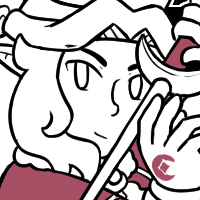
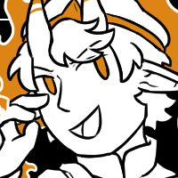
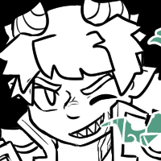
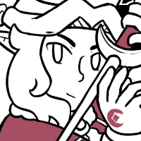
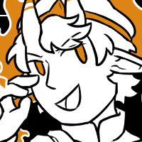
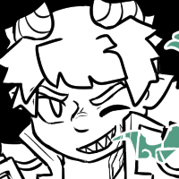